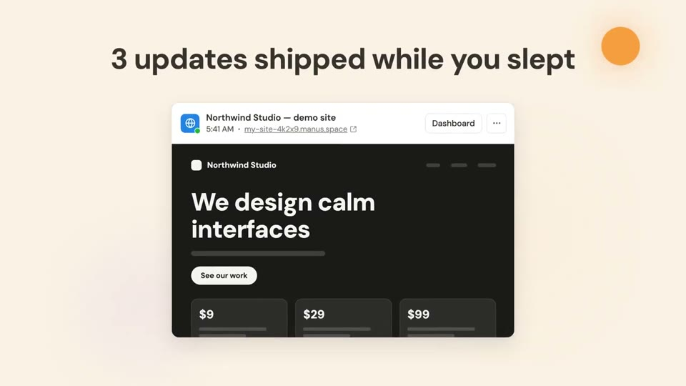
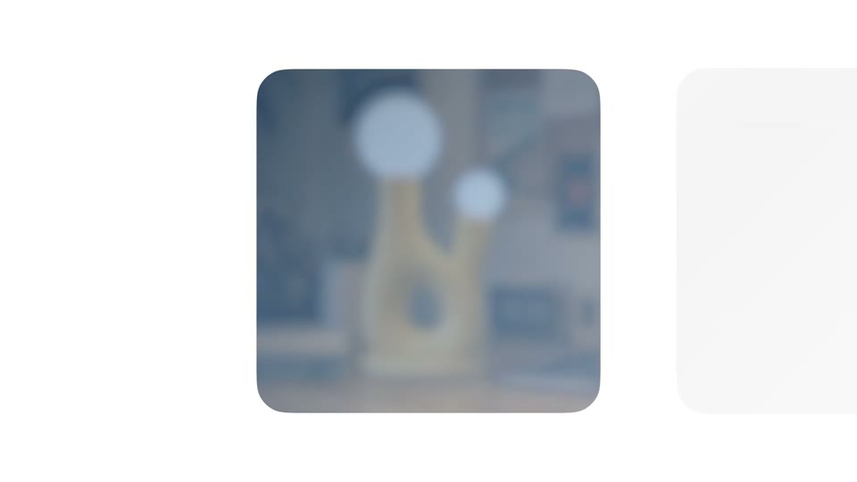
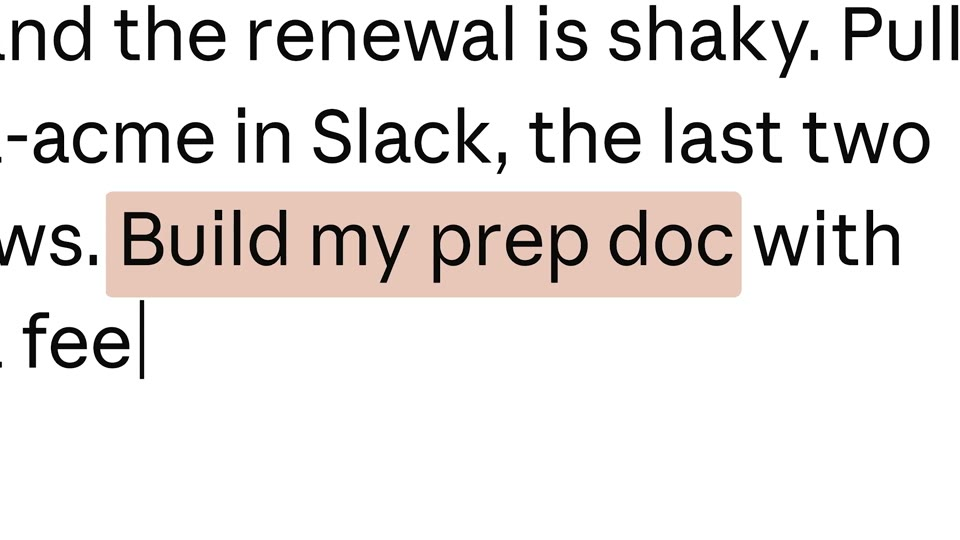
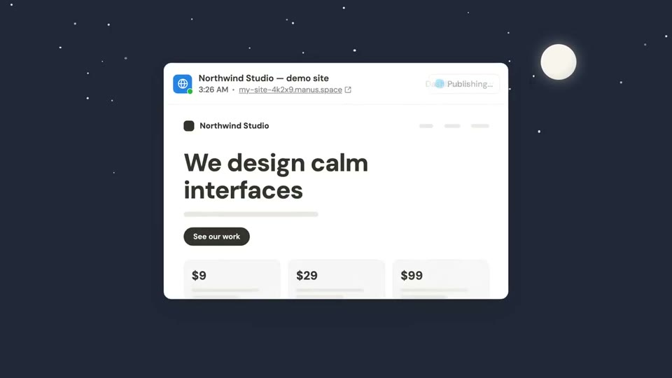
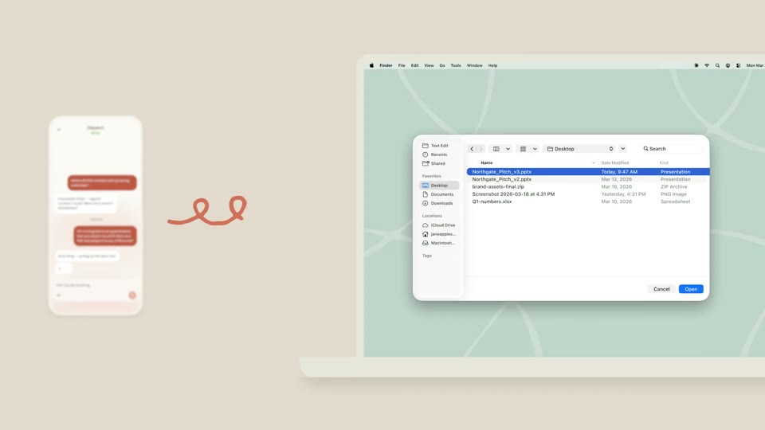
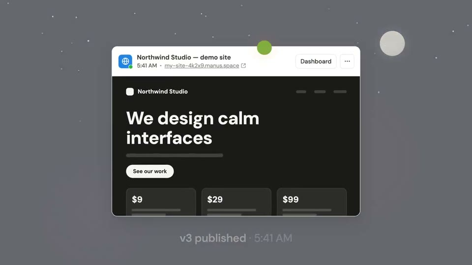

One day
One continuous shot across a day of eating. The light moves from dawn to night, each meal is typed as it happens, alternating iPhone and web, and the day’s ring fills.
Colour world. The gradients are the clock: dawn = the start aurora, noon = cream with the sky blob, evening = the violet glow, night = violet deepened toward ink.
The film, beat by beat

8:12 AM
Dawn in the start aurora, a small sun low-left. An iPhone slab rises; “oats with blueberries and a spoon of peanut butter” types.

Breakfast lands
The card resolves from blank to sharp; the day ring takes its first slice.

12:40 PM, on the web
The phone outline widens into the laptop’s web window; “chicken burrito bowl, no sour cream” is typed there; the light warms.

The detail
“no sour cream” gets the tan highlight and the number shifts.

7:05 PM
Night: the violet glow deepening toward ink, a flat moon. Back on the iPhone: “rice with a grilled chicken thigh, skin removed”.

The day adds up
Both screens side by side, the phone defocused, the web in focus; the day ring completes; the totals count up.

Back to morning
The light turns from night to dawn, so the film loops.

Sign-off
“Every meal, the way you ate it.” then “iPhone and the web”, then the mark.
How the product enters
The product is the diary: each time of day is a real entry, and switching between the iPhone and the web is part of the story (breakfast on the phone, lunch at the desk).
Calmer: the “wow” is the light, not the tech. It needs fresh captures, and the numbers must be real.
Decisions for you
What we make
Data: 2–3 new real pipeline captures for global breakfast and lunch sentences, and the day seeded on the dev account so iOS and the web match. Codex: optional sky textures only. Remotion: the light change, cards and both devices.